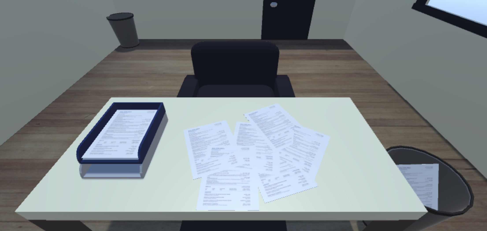
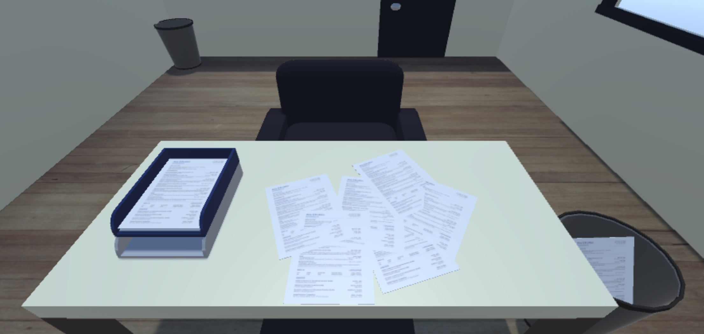
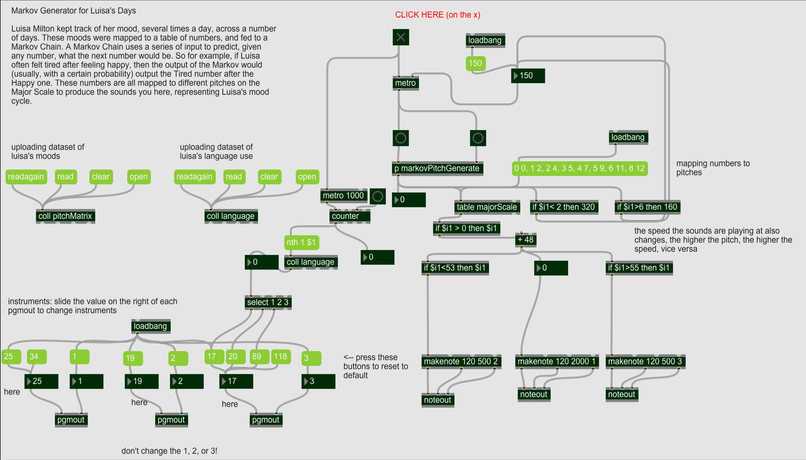
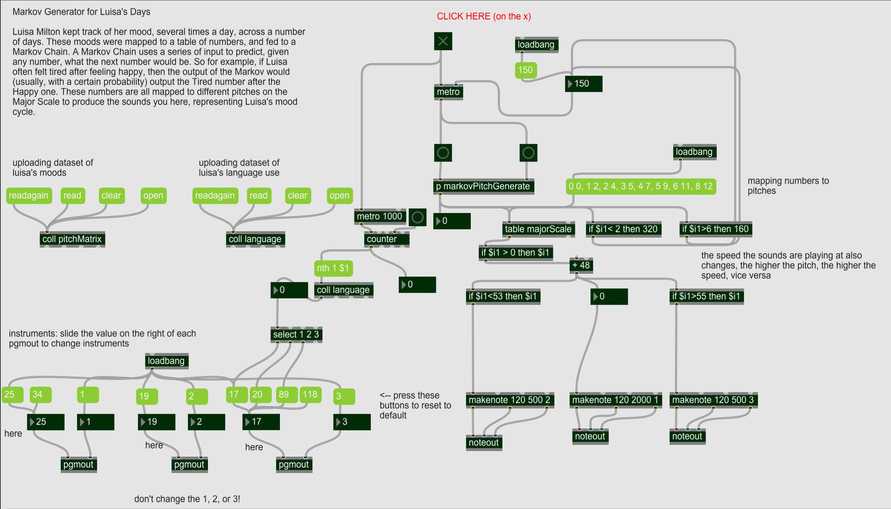

Projects
This page is under (re)construction - but here's an overview for now.
Multiplicity
Lujain Ibrahim and I built Multiplicity, a digital curation on the impact of the internet on the lives and societies of young people globally. We coded the website from scratch (with designs by Tom Abi Samra), curated and edited articles, and contributed pieces. I wrote more about this project here.
Survival of the Best Fit
Survival of the Best Fit is an educational game on AI bias built with Jihyun Kim, Gabor Csapo, and Miha Klasinc. We received $25,000 funding and incredible support to build it from Mozilla's Creative Media Awards. I did research, testing, web development, and outreach (50k+ users as of Jan 2022).
VR & Game Development
I took classes & worked on projects in game programming across web, web VR, and headset VR. I added a few screenshots of games and 3D environments I co-built to the gallery, including a space simulation, a networked escpe room, and a mockup of the NYUAD dorms.
I've worked in Unity, coded in C#, C++, JavaScript (p5.js, pixi.js), and built models in Maya, Cinema 4D, and Autodesk 3DS.
Music, Audio, & Film
I've done film editing in DaVinci Resolve and Premiere, learned music production in Logic and Pro Tools, and programmed computational music in Max MSP. For my Advanced Musical Programming class, I built Markov chain algorithmic music and an autobiographical sonification / soundscape based on analysis of my tweets in 2011-2016.
Gallery


 


 
